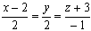
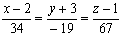

ЗАНЯТИЕ 3.2. ПРЯМАЯ В ТРЕХМЕРНОМ ПРОСТРАНСТВЕ
Контрольные вопросы
- Какие уравнения прямой Вам известны? Записать каждое из них.
Объяснить смысл постоянных параметров, входящих в канонические уравнения прямой.
- Как на прямой, заданной уравнениями, отыскать какую-либо точку?
(рассмотреть все виды уравнений прямой).
- Как перейти от одного вида уравнений прямой к другому?
- Как вычислить угол между двумя прямыми? Условия параллельности
и перпендикулярности двух прямых.
Задачи
- Составить канонические уравнения прямой, проходящей через
точку М (2; 0; - 3) параллельно: а) вектору ,
б) прямой , в) оси Ох.
- Написать канонические и параметрические уравнения прямой
.
- Спроецировать прямую
на плоскость .
- Через точку М (2; - 3; 1) провести прямую, перпендикулярную прямым
и .
- В плоскости XOZ найти прямую, перпендикулярную к прямой
и проходящую через начало координат.
- Найти угол между прямой и прямой,
проходящей через начало координат и через точку М ( 1; - 1; - 1).
- Написать уравнения прямой, проходящей через точку М (- 4; 3; 0) и параллельной
прямой .
- Написать уравнение перпендикуляра, опущенного из точки М ( 2; - 3; 4) на ось ОУ.
- Через точку М ( 2; - 5; 3 ) провести прямую:
а) параллельную оси OZ;
б) параллельную прямой ;
в) параллельную прямой
.
- Проверить, пересекаются ли прямые:
а) и ;
б) и .
Ответы
- а) ,
б)  ,
в) ;
- , ;
- ;
-  ;
- ;
- ;
- ;
- ;
- а) ,
б) ,
в) ;
- а) да,
б) да.